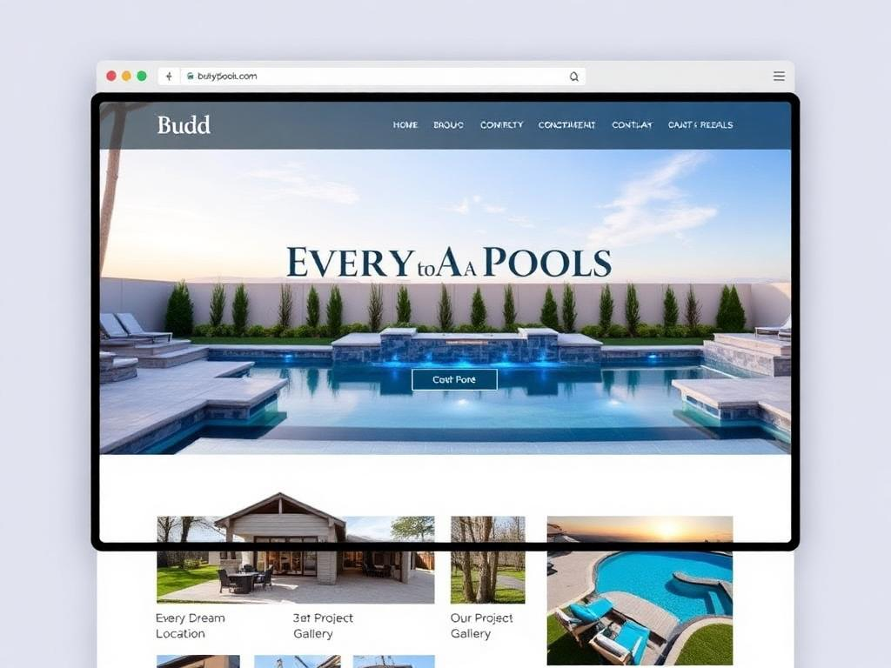
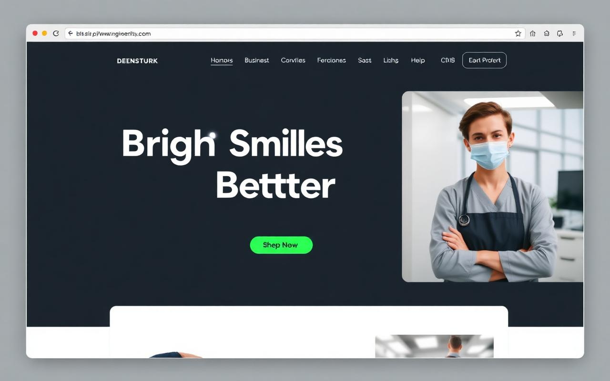
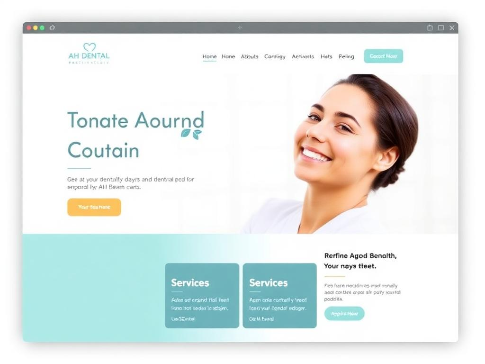
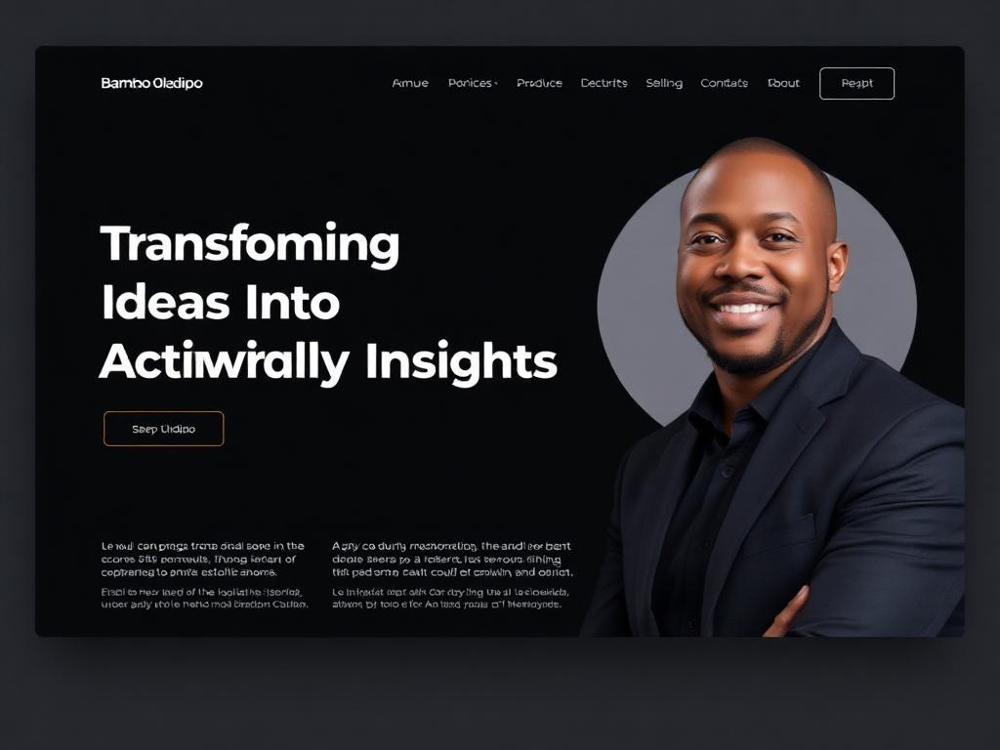

Website Growth
Complete Website Growth System
A demo of how a website, enquiry path and follow-up tracker work together.
This portfolio is built to make the offer easy to understand. Each example shows what was unclear, messy or leaking opportunities — and what kind of system can fix it.
A demo of how a website, enquiry path and follow-up tracker work together.
A CRM-style system that shows who contacted the business and when to reply.

A buyer-focused review that marks what may stop people from buying.

A website structure focused on making the offer simple and easy to act on.
A simple dashboard idea that shows traffic, enquiries and priority actions.
A service page rebuilt so people, Google and AI answer tools understand the offer.
A workflow map that turns scattered work into clear next actions.

A visual example of a clean service website built around trust and easy booking.

A personal brand website example focused on positioning and credibility.
This site includes a clear portfolio structure. You can add new screenshots and update portfolio cards over time. The best long-term version is to connect this page to Airtable so your portfolio can be managed from a table.
Request Something Similar